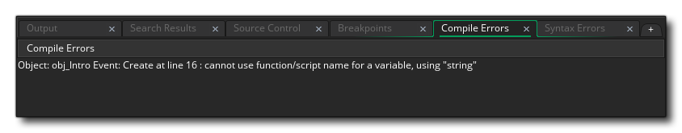
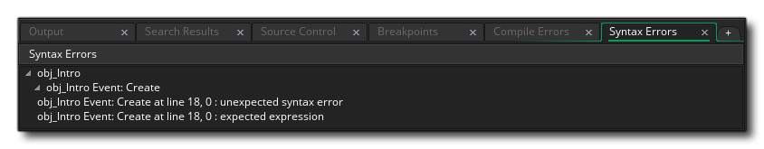

Bei der Programmierung Ihres Spiels, ob mit Code oder Drag & Drop, kann es sehr einfach sein, Fehler zu machen - die falschen Variablen zu verwenden, falsche Argumente zu übergeben oder falsche Funktionen zu verwenden sind nur einige der häufigsten Fehler, die wir alle machen - und Diese Fehler werden nicht immer vom Syntax-Checker erkannt, der im Skript- / Aktionseditor enthalten ist. Das bedeutet, dass diese Fehler nur dann sichtbar werden, wenn Sie Ihr Spiel tatsächlich ausführen oder kompilieren, und selbst dann kann es manchmal schwierig sein, genau zu wissen, was schief läuft. Es kann daher von entscheidender Bedeutung sein, zu wissen, wie Ihr Spiel auf dem gewählten Gerät abschneidet, welche Instanzen sich im Raum befinden, welche globalen Variablen erstellt wurden und wie viele andere Details vorhanden sind.
Nun können Sie viele dieser Dinge selbst überprüfen, indem Sie Ihren Spielen einen sogenannten "Debug-Code" hinzufügen, um auf dem Bildschirm die von Ihnen benötigten Informationen anzuzeigen, oder Sie können festlegen, dass bei einem Fehler Meldungen angezeigt werden Das ist oft eine Menge Arbeit und wenn Sie sich nicht sicher sind, wo das Problem liegt, dann kann es ein zeitaufwendiger Fall von Versuch und Irrtum sein, um Ihren Fehler aufzuspüren. Dazu verfügt GameMaker Studio 2 über einen speziellen Testmodus namens Debug-Modus, der das Debug-Modul startet. Außerdem gibt es ein umfassendes Fehlermeldesystem, das Meldungen zur Laufzeit anzeigt, damit Sie Probleme mit Ihrem Spiel aufspüren können.
Die folgenden Abschnitte behandeln die verschiedenen Möglichkeiten, wie Sie Ihr Spiel debuggen können:
Wenn während des Kompilierens und der Ausführung eines Projekts ein Fehler auftritt, wird dies mit einer Nachricht im Ausgabefenster für Kompilierungsfehler gemeldet, ähnlich wie im Folgenden dargestellt: 
Die meisten Compiler-Fehlermeldungen folgen demselben Umriss mit einer Nachricht, die das Objekt angibt, in dem der Fehler aufgetreten ist, dann das Ereignis mit der Zeilennummer und schließlich eine kurze Beschreibung des Fehlers. Diese Art von Informationen, die von der Fehlerberichterstattung zur Verfügung gestellt werden, sind sehr wichtig, da sie die Syntax- und Sprachfehler erkennen und melden, die das fertige Spiel zum Absturz bringen, aber keine subtileren Fehler melden und keine Rückmeldung geben auf Leistung. Für diese Art von Dingen sollten Sie den Debug-Modus verwenden (siehe unten).
Abgesehen von diesen Kompilierfehlern können Sie auch Syntaxfehler erhalten. Diese werden beim Hinzufügen Ihrer DnD™ -Aktionen oder Ihres Codes erkannt und im Ausgabefenster für Syntaxfehler angezeigt, ähnlich wie im folgenden Bild: 
Wie bei den Compilerfehlern wird das Fenster mit den Syntaxfehlern Sie zu dem Objekt, dem Ereignis und den spezifischen Zeilen führen, die das Problem verursachen, und wird oft mit einer kurzen Erläuterung des Fehlers angezeigt.
Wenn Sie die Dinge genauer überprüfen müssen, können Sie das Spiel im Debug-Modus ausführen, indem Sie auf die Debug-Schaltfläche klicken
. Wenn Sie dies tun, wird das Debugmodul zusammen mit Ihrem Spiel geöffnet. Mit diesem Modul können Sie überwachen, wie alles in Ihrem Spiel funktioniert, von der globalen Leistung bis hin zu den Werten einzelner Variablen in einzelnen Fällen. Auf der folgenden Seite finden Sie weitere Informationen zum Debug-Modul und seinen Möglichkeiten und dessen Verwendung:
Beachten Sie, dass Sie beim Verwenden des Debug-Moduls auch Breakpoints zu Ihrem Code oder DnD™ hinzufügen können. Ein Haltepunkt ist ein Punkt in der Spielschleife, in dem das Debug-Modul angehalten werden soll und Sie den aktuellen Spielcode Zeile für Zeile durchgehen lassen können. Sie können Haltepunkte mit der Taste hinzufügen " F9 "und sie werden im Ausgabefenster angezeigt, wo Sie sie nach Bedarf aktivieren / deaktivieren können.
Wenn Sie ein Spiel zum Debuggen ausführen, können Sie mithilfe der Option " Profil " im Debug-Modul auch sehen, wie sich Ihr Spiel verhält, und einen Überblick darüber erhalten, wie alles zusammenarbeitet. Dies gibt sehr detaillierte Informationen darüber, wie ein Spiel funktioniert und wie lange es dauert, bestimmte Funktionsaufrufe oder Ereignisse auszuführen (weitere Details finden Sie im Abschnitt über das Debug-Modul ). Dies erfordert jedoch, dass das Debug-Modul ausgeführt wird, was möglicherweise nicht das ist, was Sie wollen, insbesondere wenn Sie die endgültigen ausführbaren Dateien auf Geräten usw. testen möchten...
In diesen Fällen und als Ergänzung zum Profiler können Sie die Debug-Leiste in Ihrem Spiel anzeigen, die viel Speicher, CPU-Leistung und GPU-Leistung anzeigt, die Ihr Spiel verwendet.
Diese Debug-Leiste zeigt in einer nützlichen Grafik die CPU / GPU-Nutzung im eigentlichen Spielfenster selbst, und diese kann mit der Funktion in Ihrem Spiel ein- und ausgeschaltet werden show_debug_overlay(). Diese Leiste ist in Abschnitte unterteilt, wobei jeder Abschnitt 1/60 Sekunden lang ist. Wie Sie auf dem Bild unten sehen können, besteht die Leiste aus verschiedenen Farben, wobei jede einen anderen Aspekt der Spieleleistung darstellt. Je größer die Leiste, desto mehr Zeit benötigt dieser Aspekt und desto größer ist die Leistung, die er erzielt:
- Grün - Eingabe / Ausgabe Verarbeitung (zB: Tastatur, Maus, Gamepad, Netzwerk usw.)
- Rot - Die Aktualisierungsgeschwindigkeit des Schrittes
- Gelb - Die Zeit, die für das Zeichenereignis benötigt wird
- Orange - Debug-Aktualisierungszeit, die normalerweise nur sichtbar ist, wenn Sie das Debug-Modul verwenden
- Weiß - Die verbleibende GPU ist die Zeit, die vergeht, bis die GPU das Rendern des Frames beendet hat, bevor der nächste beginnen kann
- Cyan - Die Zeit zum Rendern des Texts
- Grau - Die Zeit, die benötigt wird, um jeden Zeichenschritt zu löschen
- Dunkelrot - Der GPU-Flush, wie lange die GPU benötigt, um Bilder aus dem Speicher zu löschen
Neben den farbigen Balken gibt es oben noch ein paar Werte. Diese Werte repräsentieren Folgendes:
- FPS - Dies ist die "Frames pro Sekunde" deines Spiels und zeigt im Grunde, wie schnell dein Spiel läuft. Dieser Wert ist nicht an die Spielgeschwindigkeit Ihres Spiels gebunden und zeigt Ihnen somit, wie viel "Overhead" Sie spielen müssen. Je größer dieser Wert im Vergleich zu Ihrer Spielgeschwindigkeit ist, desto flüssiger wird Ihr Spiel und desto mehr Aufwand haben Sie, um weitere Dinge hinzuzufügen. Beachten Sie, dass dieser Wert während einer Sitzung stark variieren kann, aber wenn Sie Ihr Spiel schließen, zeigt Ihnen das Compiler-Ausgabefenster in GameMaker Studio 2 die minimalen und maximalen sowie die durchschnittlichen Werte dafür an (beachten Sie, dass der Mindestwert sein kann) negativ! Dies ist kein Bug, sondern aufgrund der Startzeiten und der Art, wie das Spiel bei der Initialisierung verarbeitet wird).
- Texture Swaps - Diese Zahl gibt an, wie oft Ihr Spiel Texturen pro Spielrahmen vertauscht (die Zeit, die GameMaker Studio 2, um alle Ereignisse auszuführen, ist ein Spiel-Tick und die Anzahl der Spiel-Ticks pro Sekunde wird durch die Raumgeschwindigkeit bestimmt). Texturen (Sprites und Hintergründe) werden auf Texturseiten gespeichert. Wenn Sie in Ihrem Spiel viele GameMaker Studio, muss GameMaker Studio 2 zwischen den Texturseiten wechseln, um alle zu zeichnen. Wenn dieser Wert also hoch ist (über 20, zum Beispiel) solltest du wirklich nach Möglichkeiten suchen, dies zu optimieren, da es die Leistung deines Spiels beeinflusst, besonders auf mobilen Plattformen.
- Vertex Batches - Dies ist, wie oft das Spiel Textur-Stapel an die GPU pro Spiel-Frame sendet, und (wie bei Textur-Swaps) soll dies so niedrig wie möglich sein. Textur-Batches sind im Grunde Datenbündel, die auf einmal zum Rendern an die GPU gesendet werden. Der Stapel ist "gebrochen", wenn Sie eine Schriftart, eine Farbe, einen Mischmodus oder einen anderen Zeichnungsstatus ändern, der sich darauf auswirkt, wie Objekte global gezeichnet werden. Sie sollten daher versuchen, diese Dinge auf so wenige Objekte wie möglich zu beschränken Eine hohe Anzahl von Batches beeinträchtigt die Leistung Ihres Spiels.
HINWEIS: Textur-Swaps und Vertex-Chargen sind niemals Null und zeigen normalerweise Werte von 2 oder 3 an, da GameMaker Studio 2 selbst bei leerem Raum noch keine Objekte zeichnen und chargen muss.Mit diesen Tools können Sie sehen, wie gut Ihr Spiel funktioniert und welche Bereiche "optimiert" werden müssen, um diese Leistung zu steigern. Weitere Informationen zu Leistungsproblemen und Möglichkeiten zur Optimierung Ihres Spiels finden Sie in der YoYo Games Hilfe - Optimierung Ihrer Spiele.

Als zusätzliches Tool zum Debuggen kompilierter Spiele gibt es bestimmte Befehlszeilenparameter, die verwendet werden können, wenn Sie das finale Spielpaket auf Windows ausführen. Informationen dazu, wie das funktioniert, finden Sie hier.